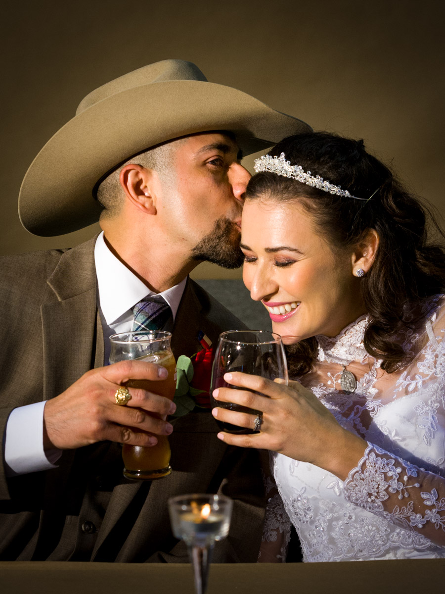

We approach every wedding with the same belief: your day deserves to be documented with honesty and heart. Not directed. Not staged. Just present, for the moments that matter most, from the quiet anticipation before you walk down the aisle to the last song of the night.
Arlen has been photographing weddings since 2007. He earned his PhD in English and started shooting at the same time, and the two were never separate. He's a storyteller who reads a room the way a close reader reads a page: looking for what's true, what's fleeting, and what will still matter twenty years from now.
Based in Austin. Available across Texas, the Hill Country, and worldwide.
Wedding Photography
Three collections, from intimate elopements to full weekend stories. Starting at $2,500.
View Collections & Pricing →Arlen has become our family's dedicated photographer and an important part of our lives. From LinkedIn photos to prom, senior portraits, college milestones, and our wedding, he has been there for every meaningful moment.
Sonya Forster, Austin, Texas
Select your collection, choose your date, and we take it from there. We keep the process as easy as your day should feel.
Within 24 hours of your booking request, we'll reach out personally by phone or email to hear about your wedding and walk you through everything available.
Choose the collection that fits your day and click Reserve. You'll be taken to our calendar to select your wedding date and time.
Within 24 hours you'll receive a contract and invoice. Everything in writing, no ambiguity, no surprises.
A non-refundable retainer of $1,082.50 ($1,000 + tax) confirms your booking and holds your date. Remaining balance due 5 days before your wedding.
We call or email within 24 hours to hear about your day and make sure every detail is right.
We typically book 12 to 18 months in advance for peak Austin dates. Check availability for your date today.